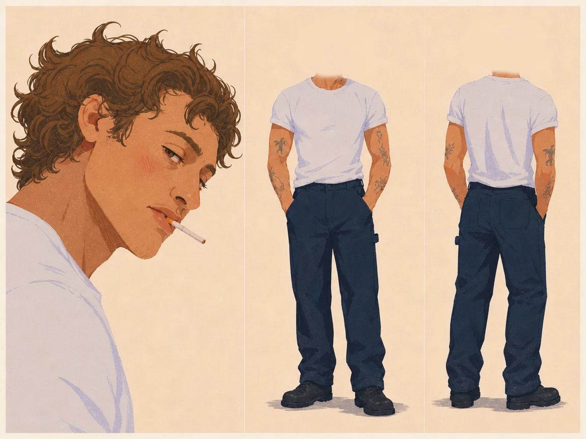
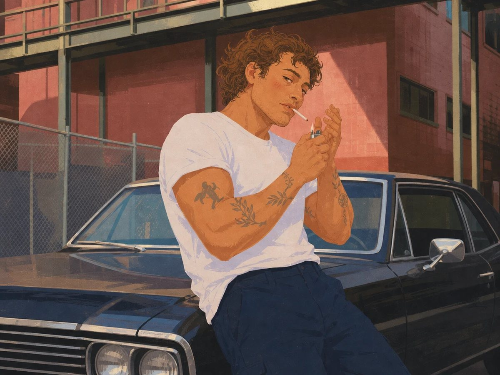

My character, his voice and every prompt. Copy them and make yours.
One sheet with his face, hair and tattoos. It decides how the whole video looks.

The shot where he starts talking. Face clearly visible.

16:9 horizontal. The man from Image 1, the face exactly like the close up in the left panel, same hair, white t-shirt, work trousers and arm tattoos, in the exact same illustration style as Image 2, flat gouache and risograph feel, dry brush paper grain, warm color palette, cool relaxed mood. He is a grown man in his late 30s, masculine and solid like the man in Image 2: broad shoulders, strong muscular arms and big hands, a thick neck, a wide strong jaw, light stubble on the jaw and upper lip, a few faint lines around the eyes. Not young, not a teenager, not skinny, not delicate, not androgynous. Paint the face like a normal, realistic adult face with natural proportions: brown eyes, natural size, no reflections in the eyes. Matte skin with fine grain and small imperfections, not smooth. Thin loose brown and red pencil-like correction lines on the eyelid crease, under the eye, on the nose and nostril and on the edge of the lips, and red hatched strokes on the cheek. Nothing shines: no gloss on the skin, eyes or hair. Not anime. Use Image 3 only for the place and the idea: a quiet city street in the daytime, an old dark sedan from the late 60s parked in front of a red brick building with a metal walkway above and a chain link fence, side sunlight with long shadows on the street. The car, the building and the street are not realistic: simplified into big flat color shapes with few details, chalky dry brush texture and the same grain, painted exactly like the kitchen background in Image 2. No text anywhere, no signs with words, no logos, no license plate text. He leans back against the front fender of the car, both hands free near his face: an unlit cigarette in the corner of his mouth and a small metal lighter in one hand, the other hand cupped near the cigarette, about to light it. Framed from the knees up, the car filling the frame behind him, subject in the center. His face turned toward the camera in a three quarter view, looking toward the lens with a calm, half amused look, the whole face clearly visible. No outlines, flat color shapes, hard shadow edges.
Deep voice is fine, but it is not enough. Add how he talks and where he is.
deep voice
relaxed
a little raspy
casual and calm
talking on the street
A relaxed man in his late 30s with a New York accent and a normal, medium low voice with a little rasp, not too deep. He talks casually and naturally, like he is chatting with a friend on the street, easygoing, confident and a bit amused, with natural pauses. Recorded outdoors on a camera microphone at a normal speaking distance, with a little open air and faint street ambience. Not a studio recording, not a podcast, not a narrator, not ASMR, not a movie trailer voice.
[relaxed] [low voice] Do you want to know why most AI voices sound so fake? [exhales] They can't do this. [quietly] [low voice] Come closer... [whispers] I'll show you how to make one in three simple steps.
Picture, voice and a detailed prompt: how he moves, the camera, the place.
=== SETTINGS === Model: Seedance 2.5. Mode: Reference. Duration: 11 seconds. Aspect ratio: 4:3 horizontal. Resolution: 720p. Takes: 1, generate only ONE video. Attached references, in this order: @Image 1 = the character sheet of the man (identity, face, hair, tattoos, clothes). @Image 2 = the start frame and the place: the man leaning on the old dark car in the street, and the exact illustration style of the whole clip. Use this whole prompt as written, do not rewrite, shorten or translate it. Do exactly ONE video generation. Do NOT generate separate voiceover, TTS, audio files, images or anything else. The speech is generated inside the video by Seedance, with his lips in sync. Do not plan, split or rewrite the task. NO MUSIC. The audio is only his voice and the natural sound of the street and the lighter. Music is added later in the edit. === DIALOGUE (MANDATORY) === 1. 0.4 to 3.0 s: "Do you want to know why most AI voices sound so fake?" 3.0 to 4.2 s: silence. No words. He lights the cigarette. 4.2 to 5.0 s: a slow exhale, no words. 2. 5.1 to 6.1 s: "They can't do this." 3. 6.6 to 7.3 s: "Come closer..." 4. 7.8 to 10.6 s, whispered: "I'll show you how to make one in three simple steps." All 4 lines are spoken in full, in this order, word for word. A version that skips, cuts, changes, repeats or adds any line is wrong. "Come closer" is said only once. The cigarette touches his lips only on the very last word "fake", and stays in his mouth only during the silent lighting, 3.0 to 4.2 s. He never says any other word with the cigarette in his mouth. === REFERENCE MAP === @Image 1 gives: his exact face (from the close up on the left), curly chestnut brown hair, light stubble, brown eyes, white t-shirt, dark navy work trousers, black boots, every arm tattoo and its place. Ignore: the plain cream background, the panel layout, and the missing heads of the full body views. @Image 2 gives: the first frame, the place (old dark sedan from the late 60s, red brick building, metal walkway above, chain link fence, daytime side sunlight from the left with long shadows), the framing from the knees up, and the exact painted look of the clip. Ignore: the cigarette already in his mouth and the lit lighter; at the start of this clip the cigarette is in his hand, not in his mouth. === CHARACTER LOCK === The same man in every frame: late 30s, solid and masculine, broad shoulders, strong arms of NORMAL size that never grow during the clip, curly chestnut brown hair, light stubble on the jaw and upper lip, a wide jaw, brown eyes of natural size, matte skin with small imperfections, thin pencil-like brown and red correction lines on the eyelid crease, under the eye, on the nose and on the edge of the lips, red hatched blush on the cheek. White t-shirt, dark navy work trousers, the same tattoos in the same places as @Image 1 on every frame. Nothing on him shines, ever: no gloss on the skin, no light reflections in the eyes, no shiny hair. Two hands, five fingers each, natural size. Props, exactly two: one cigarette and one small metal flip lighter. No other objects in his hands. His mouth opens naturally when he talks, like a relaxed man chatting, never wide open, never exaggerated. Behaviour: calm, unhurried, a little amused, the confidence of someone who knows something you don't. Small, economical gestures, but the lighting is quick and practiced, like a habit. The face stays identical from the first to the last frame. A face that changes, gets glossier, younger, prettier or more realistic is wrong. === VOICE LOCK === One speaker, him. A relaxed man in his late 30s with a New York accent and a normal, medium low voice with a little rasp, not too deep. He talks casually and naturally, like he is chatting with a friend on the street: easygoing, confident, a bit amused, with natural pauses. It sounds recorded outdoors by the camera filming him, at a normal speaking distance, with a little open air. Not a studio recording, not a podcast, not a narrator, not ASMR, not a movie trailer voice. The same voice for every line, including the whisper. === LOOK LOCK === The whole clip stays a hand painted editorial illustration exactly like @Image 2: flat gouache and risograph feel, big flat color shapes, hard edged flat shadows, no outlines, rough dry brush edges, fine speckled paper grain on every frame, warm tan skin with terracotta shadows, red brick, slate blue and navy palette. It moves like a hand painted 2D animated film: flat shapes move as flat shapes, shadows stay flat and hard edged when he moves. It is never a video filter over a painting. The paper grain and the brush texture never smooth out. Never photorealistic, never 3D, never glossy, never anime, never a cartoon with outlines. Light: the same daytime side sunlight from the left as @Image 2, the whole clip. The only light change is the small flat orange glow of the lighter flame on his hands and chin while it burns. === SHOT SETUP === One continuous shot, no cuts. The camera is held by a real person standing about 2 meters in front of him at chest height, filming him casually like a friend recording him on the street. Handheld baseline from 0.0 to 11.0 s: constant small sway of about 1 degree from the operator's breathing, the horizon drifting slowly between 1 and 2 degrees left and right, tiny reframes that arrive a beat late. THE CAMERA NEVER FREEZES, not even when he holds still. Framing from the knees up as in @Image 2, his head always fully inside the frame with space above the hair. === PART 1: SHOT BREAKDOWN === MOMENT 1, 0.0 to 3.0 s, line 1 "Do you want to know why most AI voices sound so fake?" He leans back on the front fender of the car, relaxed. The cigarette is between two fingers of his right hand, held near his chin, NOT in his mouth. The closed lighter is in his left hand at chest height, ready. He says the line looking into the lens, mouth free. On "sound so fake?" his right hand brings the cigarette up, and he places it in the corner of his mouth exactly as he finishes the word "fake", while the left hand already raises the lighter. EFFECT: handheld baseline only, a tiny late reframe as he shifts his weight on the car. AMBIENT: quiet street, a faint distant car far away, light wind. MOMENT 2, 3.0 to 4.2 s, silence, the lighting, quick He cups his right hand around the lighter and flicks it with his thumb exactly twice, fast: the first flick only sparks, the second lights a small flat orange flame. He brings the flame to the tip, takes one short drag, the tip glows orange, he snaps the lighter shut. His eyes drop to the flame and come straight back up to the lens. Quick and practiced, no hesitation. EFFECT: the camera operator drifts about 5 centimeters closer and tilts down a touch to follow his hands, a beat late, then settles back on his face. A small flat orange glow lights his cupped hands and chin while the flame burns, about 0.6 seconds. This is the ONE density peak of the clip. AMBIENT: two quick metallic lighter clicks, a soft flame hiss, the lid snapping shut. MOMENT 3, 4.2 to 5.0 s, the exhale He takes the cigarette out of his mouth with two fingers and lowers it to chest height. He exhales a thin stream of smoke that drifts up and to the right, painted as flat, semi transparent pale grey wisps with dry brush edges, in the same style as the rest of the image. Thin wisps, never round cartoon cloud puffs. EFFECT: handheld baseline. Exactly one stream of smoke, fading over about 2 seconds. MOMENT 4, 5.1 to 6.1 s, line 2 "They can't do this." Cigarette in his hand at chest height, mouth free, a thin thread of smoke rising from the tip. He looks straight into the lens through the last of the smoke, a slow half smile at the end of the line. EFFECT: handheld baseline, a small late reframe. MOMENT 5, 6.6 to 7.3 s, line 3 "Come closer..." He pushes himself a little off the car and leans toward the camera about 10 centimeters, chin slightly down, eyes locked on the lens, voice dropping. The cigarette stays in his hand near his chest. EFFECT: exactly one zoom in this clip: the camera's zoom jumps in two quick uneven steps, about 8 percent each, with a small overshoot, starting on "Come closer". After the zoom he is framed from the waist up, the whole head and hair still inside the frame with space above. Nothing ever appears in front of the lens. MOMENT 6, 7.8 to 10.6 s, line 4, whispered, "I'll show you how to make one in three simple steps." He holds the lean and says the line quietly, lips clearly moving, one eyebrow lifting a little on "three simple steps". The cigarette near his chest, a thin thread of smoke rising. EFFECT: handheld baseline, the horizon drifting about 1 degree. MOMENT 7, 10.6 to 11.0 s He holds the look into the lens with a small knowing smile. The camera keeps its small sway. The clip ends on that look, no fade. === PART 2: EFFECTS LIST === Handheld sway and horizon drift: continuous, 0.0 to 11.0 s. Late reframes: three, small, at about 1.5 s, 3.3 s and 5.6 s. Operator drift closer and tilt to the hands: one, 3.0 to 4.0 s. Lighter flicks: exactly two, 3.2 s and 3.5 s. Flame glow on hands and chin: one, about 3.5 to 4.1 s. Exhale of smoke: exactly one thin stream, 4.2 to about 6.2 s. Stepped zoom in: exactly one, two steps, starting at 6.6 s. His lean toward the camera: one, 6.6 to 7.3 s, held to the end. NOT USED ANYWHERE: cuts, a still or tripod camera, smooth gimbal moves, a second zoom, pans away from him, focus pulls to the background, light changes, music, text, subtitles, signs with words, logos, license plate text, other people, passing cars, a second cigarette, cartoon smoke clouds, glowing eyes, fingers or hands in front of the lens. === PART 3: EFFECT DENSITY === 0.0 to 3.0 s: LOW, the handheld sway, one reframe and the cigarette rising to his lips at the end. 3.0 to 4.2 s: HIGH, the quick lighting, the flame glow and the operator's drift: the one peak. 4.2 to 6.1 s: LOW, smoke and sway. 6.6 to 7.3 s: MEDIUM, the lean and the one stepped zoom. 7.8 to 11.0 s: LOW, sway only, all attention on his face and the whisper. === PART 4: MOTION FLOW === Opening: a relaxed man on a quiet street asks you a question, cigarette ready in his hand, and brings it to his lips right as he finishes. Build: a quick, practiced light, the one busy moment, then the smoke and "They can't do this" with a half smile, with no dead time in between. Resolution: he leans in, the camera jumps closer, and he whispers the promise like a secret. It works because the only fast moment is the lighting; everything else is calm, so the whisper lands. === HARD RULES === All 4 lines are spoken in full, word for word, in order; "Come closer" only once. His lips are in sync with every word. The cigarette touches his lips only on the last word "fake" and stays in his mouth only during the silent lighting, 3.0 to 4.2 s. He never says any other word with the cigarette in his mouth. The lighting is quick: done in about 1.2 seconds. The face, hair, tattoos and clothes stay identical to @Image 1 and @Image 2 in every frame. His arms keep their normal size the whole clip. Nothing on him shines: no gloss on skin, eyes or hair. His mouth never opens wide or exaggerated. The illustration style of @Image 2 stays identical in every frame: flat shapes, hard flat shadows, paper grain, no realism, no 3D. The smoke is thin, flat, painted wisps, never round cartoon clouds. Exactly two lighter flicks, exactly one exhale. The camera never freezes: constant small handheld sway from 0.0 to 11.0 s. Exactly one zoom, stepped, on "Come closer"; after it he is still framed from the waist up with the whole head inside the frame. Nothing ever appears in front of the lens. The voice sounds like a man talking on the street, recorded by the camera, never a studio or podcast voice. No text anywhere in the frame. No music. === AUDIO === Only what a camera on a quiet street would record: his voice at a normal distance with a little open air, light wind, a very faint distant car, two quick metallic lighter clicks at 3.2 s and 3.5 s, a soft flame hiss, the lid snapping shut, a soft breath on the exhale. No music, no other voices. === VOICE === Line 1: relaxed, curious, conversational, New York accent. Exhale: slow, audible, real. Line 2: calm, a small amused weight on "this". Line 3: lower and slower, inviting, a short trailing pause after it. Line 4: a calm, low whisper in the same voice, still clearly understood.
A good character sheet decides everything after it.
Describe how he talks, not just deep voice.
Small camera moves make it feel real.